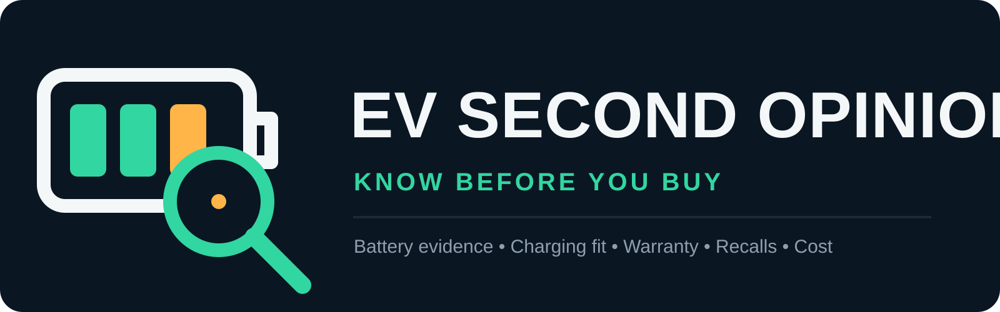
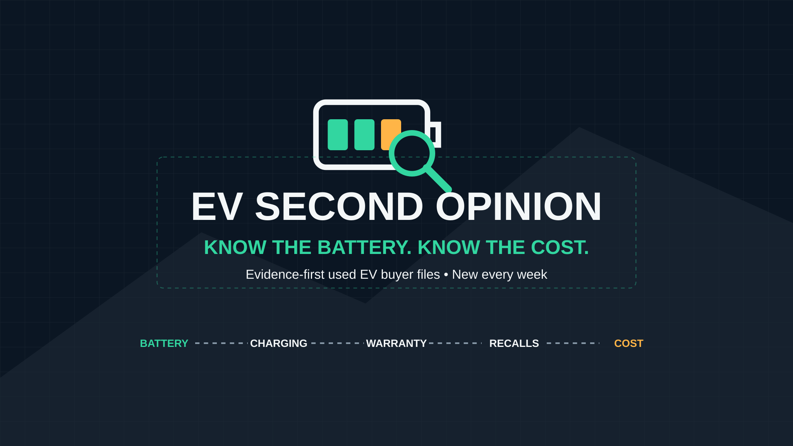
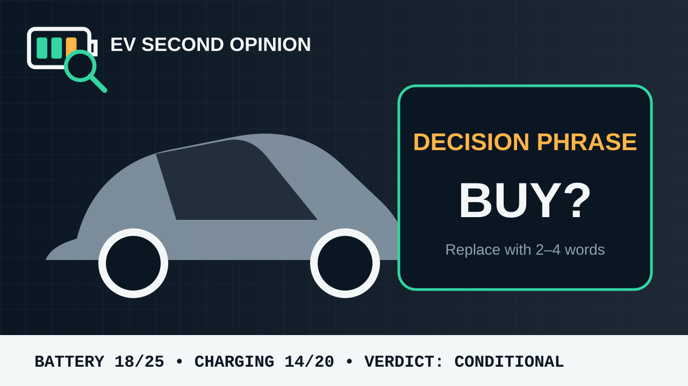

The opportunity in one minute
Used-EV shoppers face a high-cost decision with unfamiliar failure points: battery evidence, charging fit, warranty transfer, recalls, depreciation and local ownership costs. The channel converts those questions into a repeatable, auditable pre-purchase decision rather than another general review or news summary.
The channel product
Every episode visibly separates Verified, Observed and Unknown; applies a buyer-specific evidence score; and ends with a conditional Buy / Wait / Walk verdict. The analysis—not stock footage—is the product.
Verified
What an official, manufacturer or vehicle-specific primary source establishes.
Observed
What a dated listing, market sample, diagnostic result or API snapshot shows.
Unknown
What still requires the exact VIN, physical inspection, diagnostic access, route test or local quote.
Why the evidence aligns
vidIQ: demand cluster
Connected research surfaced multiple decision-stage terms—not one fragile keyword—including “ev buying guide,” “buying used ev,” “used tesla buying guide,” “tesla battery health check” and “ev battery degradation.” Metrics are retained as directional connector evidence [V01].
Review vidIQ validationYouTube API: active viewing
Five recent used-EV or used-Tesla decision videos in the selected sample drew roughly 257,000–469,000 views and hundreds of comments, validating current long-form viewing across multiple creators and vehicles [Y01–Y05].
Review API validationWeb: buyer context
Official and market sources establish changing incentives, growing used-EV activity, battery uncertainty, charging-fit requirements, recall limitations and originality rules [S01–S09].
Review market contextAll source IDs, URLs, access dates, supported claims, reliability grades and limitations are in the source log and evidence ledger.
The 10-idea tournament
| Rank | Channel opportunity | Total / 100 | Decision |
|---|---|---|---|
| 1 | Used-EV buyer intelligence | 85.6 | Selected: best balance of demand, buyer intent, faceless originality and depth |
| 2 | Home Wi-Fi diagnosis | 82.1 | Reserve niche; strong search but weaker subscriber identity |
| 3 | Scam prevention and fraud defense | 81.0 | Higher clip, copyright and harm risk |
| 4 | Used laptop/phone diagnostics | 80.2 | Crowded and often requires hardware access |
| 5 | Airport transfer and layover navigation | 75.8 | Best content depends on current location footage |
| 6 | Heat-pump/home-energy troubleshooting | 75.5 | Safety and filming burden |
| 7 | Subscription traps and dark patterns | 70.7 | Keyword signal did not align with sampled viewing |
| 8 | Appliance error-code diagnosis | 70.6 | Demand strong, but visible repair is the winning product |
| 9 | Sleeper-train planning | 68.3 | Original travel footage is a structural advantage |
| 10 | Megaproject map explainers | 68.2 | Huge demand, but documentary-level competition and production |
Brand system
The identity is designed as “a calm diagnostic desk for a noisy purchase”: independent, precise, buyer-sided and explicit about uncertainty.
{kind=link}

Scalable logo concept
{kind=link}

YouTube banner concept
{kind=link}

Reusable thumbnail template
Open the complete brand, voice, motion, typography, rights and thumbnail guide
First 10 launch videos
- The Used EV Tax Credit Is Gone—What Buyers Do Now
- How to Check a Used EV Battery Before You Buy
- Used Tesla Model 3: Seven Checks Before You Pay
- Why Full-Charge Range Does Not Prove Battery Health
- The Charging Compatibility Check Every Used EV Needs
- Can You Own an EV Without Home Charging? Run This Test
- EV Depreciation: Bargain, Warning or Both?
- EV Battery Warranty Fine Print: What 70% Really Means
- The Real Used-EV Cost Worksheet
- The VIN and Recall Audit That Can Stop a Bad Deal
Each script includes a target duration, production note, narrated draft, on-screen directions, source slate and original visual asset list. Open the 90-day launch order and publishing plan.
Red team: the thesis survives conditionally
The strongest objections are real: the niche is not empty; a faceless narrator lacks embodied owner/mechanic trust; battery health is not standardized across brands; facts stale quickly; the workflow is research-heavy; and a templated asset channel can resemble low-effort AI content.
The blueprint responds by narrowing the product to auditable due diligence, showing unknowns, requiring original calculations and document walkthroughs, refreshing current claims, prohibiting paid verdicts, and pre-committing to a 90-day kill/iterate/scale test.
Read all 12 objections and revisions · Open the pre-committed decision framework
Complete deliverables map
Start here
Opportunity research
Positioning and brand
Content engine
- Six-series content system and 100-topic depth map
- 90-day calendar and packaging system
- Scripts 01–10 (linked individually above)
Production and revenue
Adversarial control
Completion audit
Definition-of-done self-grade
| Requirement | Status | Evidence |
|---|---|---|
| Faceless, camera-free, asset-based and original | PASS | Blueprint, brand rules and production originality minimum |
| Evidence from vidIQ, YouTube API and broader web | PASS | Three separate validation documents plus source ledger |
| At least 10 candidate ideas evaluated | PASS | 10-idea weighted tournament and dossiers |
| Complete positioning and brand system | PASS | Channel blueprint, guide and three SVG assets |
| First 10 launch-ready videos complete | PASS | Ten full scripts with production notes and sources |
| Production and monetization systems | PASS | SOP, brief, claim ledger, worksheets and revenue guardrails |
| Thesis attacked and objections visible | PASS | 12-objection red-team report and 90-day kill switch |
| Every deliverable linked; no placeholder presented as finished | PASS | Deliverables map and final audit |
| No channel, message, email or external publication performed | PASS | Repository artifacts only |
Important limits before launch
- vidIQ figures are point-in-time connector estimates without query-specific public URLs; they are directional, not traffic guarantees.
- The API sample proves active viewing but is biased toward successful results and does not expose the full failure rate.
- No views, subscriber growth, earnings, sponsor interest, battery life, resale value or cost savings are guaranteed.
- Brand SVGs are edit-ready concepts; raster exports should be checked at YouTube’s current dimensions before upload.
- Tax, policy, recall, warranty, connector, price and market claims must be rechecked within the defined refresh window—within 24 hours for upload-sensitive claims.
- The channel screens a purchase; it does not replace vehicle-specific diagnostics, title review, insurance quotes or qualified physical inspection.